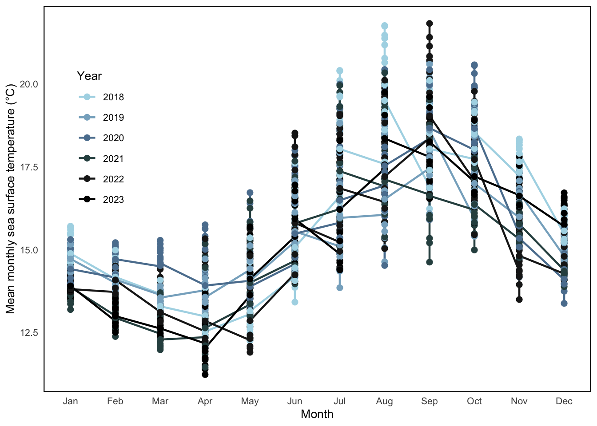
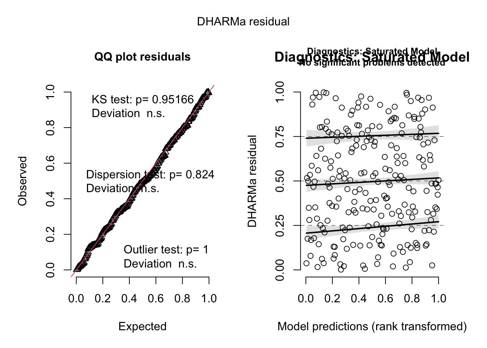
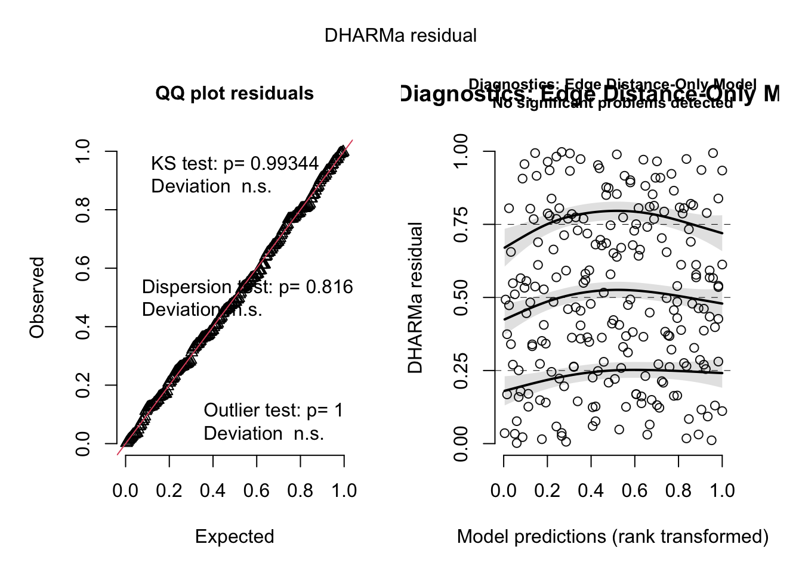

── Attaching core tidyverse packages ──────────────────────── tidyverse 2.0.0 ──
✔ dplyr 1.1.4 ✔ readr 2.1.5
✔ forcats 1.0.0 ✔ stringr 1.5.1
✔ ggplot2 3.5.1 ✔ tibble 3.2.1
✔ lubridate 1.9.4 ✔ tidyr 1.3.1
✔ purrr 1.0.4
── Conflicts ────────────────────────────────────────── tidyverse_conflicts() ──
✖ dplyr::filter() masks stats::filter()
✖ dplyr::lag() masks stats::lag()
ℹ Use the conflicted package (<http://conflicted.r-lib.org/>) to force all conflicts to become errors
library(ggplot2)library(lme4)
Loading required package: Matrix
Attaching package: 'Matrix'
The following objects are masked from 'package:tidyr':
expand, pack, unpack
library(DHARMa)
This is DHARMa 0.4.7. For overview type '?DHARMa'. For recent changes, type news(package = 'DHARMa')
library(MuMIn)# load in data for problems 2 & 3 sst <-read_csv("../data/SST_SBC.csv") #read one folder up so can find csv in data folder b/c Quarto in code folder
Rows: 291384 Columns: 5
── Column specification ────────────────────────────────────────────────────────
Delimiter: ","
chr (1): site
dbl (3): latitude, longitude, temp
date (1): date
ℹ Use `spec()` to retrieve the full column specification for this data.
ℹ Specify the column types or set `show_col_types = FALSE` to quiet this message.
nest_boxes <-read_csv("../data/occdist.csv") #read in nest occupancy data set, read one folder up
Rows: 227 Columns: 10
── Column specification ────────────────────────────────────────────────────────
Delimiter: ","
chr (4): box, box occupant, eventID, repeated use
dbl (6): edge distance, season, sp, cs, e, tm
ℹ Use `spec()` to retrieve the full column specification for this data.
ℹ Specify the column types or set `show_col_types = FALSE` to quiet this message.
Problem 1. Research writing
a. Transparent statistical methods
In part 1 my co-worker used a correlation test to assess the linear relationship between the distance from the headwater (km) and the annual nitrogen load (kg year⁻¹). In their statement they use the term “correlation” and provide a p-value. In part 2 they used an analysis of variance (ANOVA) to compare the mean nitrogen load across more than one course category (urban land, atmospheric deposition, fertilizer, wastewater treatment, and grasslands). ANOVA is usually sued to test for differences in means cross more than two groups, so we can infer that this is what they likely used.
b. More information needed
One test that they could do to provide more context to the results is look into the effect size. Only including a p-value tells us that the difference likely exists but not how large or significant that difference is. By including an effect size would help to assign a quantity for how much of the variation in nitrogen load can be explained by the type of source its coming fro, which is critical for making informed management decisions. Another test that could be done is Tukey’s HSD or post-doc pairwise comparison as the results from the ANOVA only tell that some group means differ but doesn’t say which ones are different from each other. Doing a post-hoc test would identify whether, for example, nitrogen load from waste water treatment differed significantly than that from fertilizer.
c. Suggestions for rewriting
Suggested rewrite for part 1:
As the nitrogen load tends to increase or decrease with distance from the headwater, this suggests a spatial trend in nutrient accumulation or dilution in the waters of the San Joaquin River Delta. This relationship is supported by a correlation analysis (Pearson’s correlation test: r = correlation coefficient, p = 0.03, α = significance level).
Suggested rewrite for part 2:
The average nitrogen load was different among land use and nitrogen source categories, which suggests that certain types of sources contribute more to nitrogen input in the San Joaquin River Delta. This was supported by an analysis of variance (F-statistic = [F-value], degrees of freedom = [df1, df2], p = 0.02, α = [significance level]). Howwver, the inclusion of post-hoc comparisons and effect size measures are needed to identify which sources differ and the magnitude of their contributions.
Problem 2. Data visualization
a. Cleaning and summarizing
sst_clean <- sst |># convert date column to date formatmutate(date =ymd(date)) |># extract year and monthmutate(year =year(date),month =month(date, label =TRUE) ) |># filter to 2018–2023filter(year >=2018, year <=2023) |># group by site, year, and monthgroup_by(site, year, month) |># summarize mean sea surface temperaturesummarize(mean_sst =mean(temp, na.rm =TRUE),.groups ="drop" )# view structure and sample of cleaned dataslice_sample(sst_clean, n =5)
# A tibble: 5 × 4
site year month mean_sst
<chr> <dbl> <ord> <dbl>
1 SITE7 2018 Feb 13.9
2 SITE15 2022 Mar 13.0
3 SITE11 2022 Oct 19.1
4 SITE9 2021 Aug 17.1
5 SITE5 2019 Feb 14.2
library(ggplot2)library(dplyr)# make sure 'month' is ordered correctlysst_clean$month <-factor(sst_clean$month, levels = month.abb)# convert year to a factor for correct discrete coloringsst_clean$year <-factor(sst_clean$year)# summarize if needed elsewheresst_summary <- sst_clean %>%group_by(year, month) %>%summarise(mean_sst =mean(mean_sst, na.rm =TRUE), .groups ="drop")# recreate plotggplot(sst_clean, aes(x = month, y = mean_sst, group = year, color = year)) +geom_line(linewidth =0.8) +geom_point(size =2) +scale_color_manual(values =c( # lightest to darkest blue"2018"="#ADD8E6","2019"="#87AFC7","2020"="#5B7F9E","2021"="#2F4F4F","2022"="#1C1C1C","2023"="#000000" ),name ="Year" ) +labs(x ="Month",y ="Mean monthly sea surface temperature (°C)",color ="Year" ) +theme_minimal(base_size =10) +theme(panel.grid =element_blank(), # remove grid linespanel.border =element_rect(color ="black", fill =NA, linewidth =0.8),panel.background =element_rect(fill ="white", color =NA),plot.background =element_rect(fill ="white", color =NA),legend.position =c(0.05, 0.85), # move legend inside top-leftlegend.justification =c(0, 1),legend.background =element_rect(fill ="white", color =NA),legend.key =element_rect(fill ="white", color =NA), )
Warning: A numeric `legend.position` argument in `theme()` was deprecated in ggplot2
3.5.0.
ℹ Please use the `legend.position.inside` argument of `theme()` instead.

Problem 3. Data analysis
a. Response variable
For this data set a 1 represents that a Swift Parrot had occupied a nest during a given season and a 0 means that a nest was unoccupied by Swift Parrots (either occupied by another species or completely unoccupied)
sp categorical 1 = swift parrot 0 = other species (or empty) cs categorical 1 = common starling 0 = other species (or empty) e categorical 1 = unoccupied (empty) 0 = occupied tm categorical 1 = tree martin 0 = other species
b. Purpose of study
The main difference between the Swift Parrots and the other bird species in this study is that they are the critically endangered target species in this study, whereas Common Starlings and Tree Martins are competitors. The goal of this study is to assess if nest boxes support the conversation of this species or if they are mostly used by the two competing species.
c. Difference in “seasons”
The authors use the term “seasons” to refer to the study years of 2016 and 2019. These years differ because for the Swift Parrots 2016 was a breeding season and 2019 was not; this reflects the temporal variation in occupancy patterns of the species
d. Table of models
Model Number
Season Included
Distance to Forest Edge Included
Model Description
1
No
No
Null model (intercept only)
2
Yes
Yes
Saturated model with both predictors
3
Yes
No
Season only
4
No
Yes
Distance to forest edge only
e. Run the models
#code to run all of models that described would need in d. # convert season to factornest_boxes$season <-factor(nest_boxes$season)# model #1 null model (intercept only)mod1 <-glm(sp ~1, data = nest_boxes, family = binomial)# model #2 saturated model with both predictorsmod2 <-glm(sp ~ season +`edge distance`, data = nest_boxes, family = binomial)# model #3 season only mod3 <-glm(sp ~ season, data = nest_boxes, family = binomial)# model #4 Distance to forest edge onlymod4 <-glm(sp ~`edge distance`, data = nest_boxes, family = binomial)
f. Check the diagnostics
#check diagnostis of each model using simulated residuals & display plots # model #1res_null <-simulateResiduals(mod1)plot(res_null, main ="Diagnostics: Null Model")
# model #2 res_saturated <-simulateResiduals(mod2)plot(res_saturated, main ="Diagnostics: Saturated Model")

# model #3 res_season <-simulateResiduals(mod3)plot(res_season, main ="Diagnostics: Season-Only Model")
# model #4res_distance <-simulateResiduals(mod4)plot(res_distance, main ="Diagnostics: Edge Distance-Only Model")
Warning in newton(lsp = lsp, X = G$X, y = G$y, Eb = G$Eb, UrS = G$UrS, L = G$L,
: Fitting terminated with step failure - check results carefully

g. Select the best model
h. Visualize the model predictions
i. Write a caption for your figure.
j. Calculate model predictions
k. Interpret your results
Problem 4. Affective and exploratory visualizations
a. Comparing visualizations
How are the visualizations different from each other in the way you have represented your data?
What similarities do you see between all your visualizations?
What patterns (e.g. differences in means/counts/proportions/medians, trends through time, relationships between variables) do you see in each visualization? Are these different between visualizations? If so, why? If not, why not?
What kinds of feedback did you get during week 9 in workshop or from the instructors? How did you implement or try those suggestions? If you tried and kept those suggestions, explain how and why; if not, explain why not.